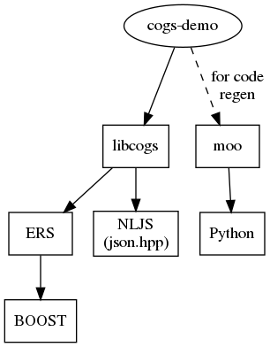

Installation notes for SL7
1 Overview
The dependencies for cogs are few. cogs as a library needs:
- ERS
nlohmann::json
To build the cogs demo, additionally:
- Avro CPP
To rerun the demo's codegen, additionally:
- moo

2 Environment
2.1 Base OS
This guide is for SL7 (or similar) base OS. If your native OS is not SL7 one method to test this guide is with a minimal Docker or Singularity container and use Fermilab UPS products from CVMFS to fill in the gaps by running something like:
$ singularity exec --bind /cvmfs /path/to/sl7.simg env -i bash --rcfile login.rc
The login.rc just sets PS1 to something reasonable.
2.2 Prepare
Some environment setup is needed. How much depends on how much of cogs to test. A full setup script with guiding comments:
# Build dev packages from source and install to a "TOP" directory export TOP=$(pwd) export PATH=$PATH:$TOP/bin export LD_LIBRARY_PATH=$TOP/lib # Just for cogs we need ERS and ERS needs BOOST source /cvmfs/dune.opensciencegrid.org/dunedaq/DUNE/products/setup setup ers v0_26_00 -q e19:prof setup boost v1_70_0 -q e19:prof # For cogs demo we need cmake to build Avro CPP: setup cmake v3_17_2 # For moo we need a supported Python version, take from larsoft PRODUCTS=$PRODUCTS:/cvmfs/larsoft.opensciencegrid.org/products setup python v3_7_2 # See guide on how this gets created and populated if [ -d "$TOP/venv" ] ; then source $TOP/venv/bin/activate else echo "moo not yet installed: $TOP/venv" fi
Use like:
$ mkdir /path/to/work $ cd /path/to/work $ source /path/to/wherever/build-sl7-setup.sh
3 Avro CPP
Avro CPP is only needed to build and run the cogs demo. It is not needed for the cogs library.
$ wget http://apache.mirrors.hoobly.com/avro/avro-1.9.2/cpp/avro-cpp-1.9.2.tar.gz $ tar -xf avro-cpp-1.9.2.tar.gz $ mkdir avro-cpp-1.9.2/build $ cd avro-cpp-1.9.2/build $ cmake .. -DCMAKE_INSTALL_PREFIX=$TOP -DBoost_NO_BOOST_CMAKE=ON $ make -j$(nproc) install
There's some garbage going on with CMake and Boost (there always some
garbage with CMake) which is why the nonsensical -DBoost_NO_BOOST_CMAKE=ON option is required here.
You should now have Avro CPP codegen compiler:
$ avrogencpp
Allowed options:
-h [ --help ] produce help message
-p [ --include-prefix ] arg (=avro) prefix for include headers, - for none,
default: avro
-U [ --no-union-typedef ] do not generate typedefs for unions in
records
-n [ --namespace ] arg set namespace for generated code
-i [ --input ] arg input file
-o [ --output ] arg output file to generate
4 moo
Moo is a Python package (which means Python3 as Python2 has ceased). The package should build from source in any of the "usual" Python manners. In future it may be provided from PyPI. Here is one example:
$ python -m venv $TOP/venv $ source $TOP/venv/bin/activate $ git clone https://github.com/brettviren/moo.git $ pip install -e .
Note: if using the setup script above, next time you use it this area will be activated.
The moo command should now be available:
$ moo Usage: moo [OPTIONS] COMMAND [ARGS]... moo command line interface Options: --help Show this message and exit. Commands: compile Compile a model to JSON imports Emit a list of imports required by the model many Render many files render Render a template against a model. render-many Render many files for a project. validate Validate a model against a schema
5 Nlohmann's JSON
Ultimately, this is just a single header.
$ mkdir -p $TOP/include/nlohmann $ wget -O $TOP/include/nlohmann/json.hpp https://github.com/nlohmann/json/releases/download/v3.8.0/json.hpp
6 cogs library
The cogs package is built with plain Waf.
$ wget -O $TOP/bin/waf https://waf.io/waf-2.0.20 $ chmod +x $TOP/bin/waf $ waf --version waf 2.0.20 (668769470956da8c5b60817cb8884cd7d0f87cd4)
Now cogs:
$ cd $TOP $ git clone https://github.com/brettviren/cogs.git $ cd cogs $ waf --help ## no demo $ waf configure --prefix=$TOP \ --with-ers=$ERS_FQ_DIR \ --with-boost=$BOOST_FQ_DIR \ --with-nljs=$TOP \ ## with demo $ waf configure --prefix=$TOP \ --with-ers=$ERS_FQ_DIR \ --with-boost=$BOOST_FQ_DIR \ --with-nljs=$TOP \ --with-avro=$TOP # waf install
If Avro is not found, only cogs library and not the demo will be built and installed. If the demo is built then it can be checked with:
$ cogs-demo 2020-Jun-27 19:54:47,027 INFO [main(...) at unknown/demo/cogs-demo.cpp:12] usage: cogs-demo <uri>
7 Tree
For reference, the resulting installation tree looks like:
$ tree bin include lib lib64
bin
├── avrogencpp
├── cogs-demo
└── waf
include
├── avro
│ ├── AvroParse.hh
│ ├── AvroSerialize.hh
│ ├── AvroTraits.hh
│ ├── buffer
│ │ ├── Buffer.hh
│ │ ├── BufferPrint.hh
│ │ ├── BufferReader.hh
│ │ ├── BufferStreambuf.hh
│ │ ├── BufferStream.hh
│ │ └── detail
│ │ ├── BufferDetail.hh
│ │ └── BufferDetailIterator.hh
│ ├── Compiler.hh
│ ├── Config.hh
│ ├── DataFile.hh
│ ├── Decoder.hh
│ ├── Encoder.hh
│ ├── Exception.hh
│ ├── GenericDatum.hh
│ ├── Generic.hh
│ ├── Layout.hh
│ ├── LogicalType.hh
│ ├── NodeConcepts.hh
│ ├── Node.hh
│ ├── NodeImpl.hh
│ ├── Parser.hh
│ ├── Reader.hh
│ ├── Resolver.hh
│ ├── ResolverSchema.hh
│ ├── ResolvingReader.hh
│ ├── Schema.hh
│ ├── SchemaResolution.hh
│ ├── Serializer.hh
│ ├── Specific.hh
│ ├── Stream.hh
│ ├── Types.hh
│ ├── Validator.hh
│ ├── ValidSchema.hh
│ ├── Writer.hh
│ └── Zigzag.hh
├── cogs
│ ├── configurable.hpp
│ ├── issues.hpp
│ ├── object.hpp
│ └── stream.hpp
└── nlohmann
└── json.hpp
lib
├── libavrocpp_s.a
├── libavrocpp.so -> libavrocpp.so.1.9.2.0
└── libavrocpp.so.1.9.2.0
lib64
└── libcogs.so
5 directories, 50 files